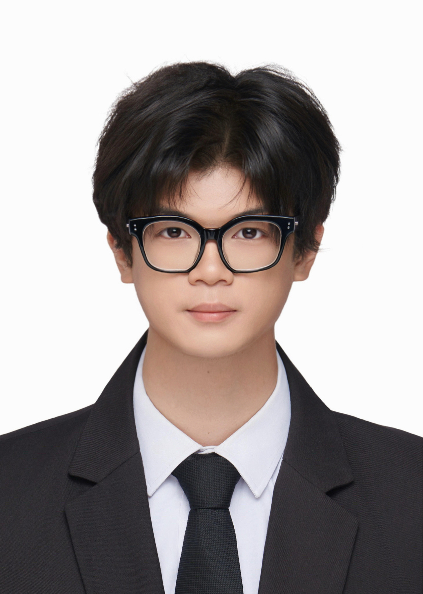

AI for Chip Design
Learning-based methods for chip design, centered on design-technology co-optimization.
PERSONAL ACADEMIC WEBSITE

Lyu Lyu is a master's student in the Department of Micro-Nano Electronics at Shanghai Jiao Tong University and received a B.Eng. in Information Engineering from Xi'an Jiaotong University in June 2025. Lyu's research centers on AI for chip design, specifically benchmarks for design-technology co-optimization and large language models for DTCO.
Learning-based methods for chip design, centered on design-technology co-optimization.
Benchmarks for design-technology co-optimization.
Large language models for design-technology co-optimization.
Bold marks Lyu Lyu. He has completed a co-optimization workflow that includes TCAD simulation, compact modeling, and HSPICE verification, and is working to enrich this benchmark and adapt it for agents. He also continues to improve LLM performance in EDA. Related work is under submission.
32nd Asia and South Pacific Design Automation Conference (ASP-DAC), 2027
Measurement, 2026
Information Fusion, 2025
IEEE Transactions on Antennas and Propagation, 2025
2024 IEEE 7th International Conference on Electronic Information and Communication Technology (ICEICT)
Sample-efficient neural compact modeling with process-aware adaptation for design-technology co-optimization.
Metrological characterization of beamforming-enhanced acoustic sensing for non-contact motor fault diagnosis.
Sep. 2026 – Present
Master's Student
Jun. 2021 – Jun. 2025
B.Eng. in Information Engineering
Sep. 2025 – Present
AI for Chip Design
Through Sep. 2025
Signal Processing